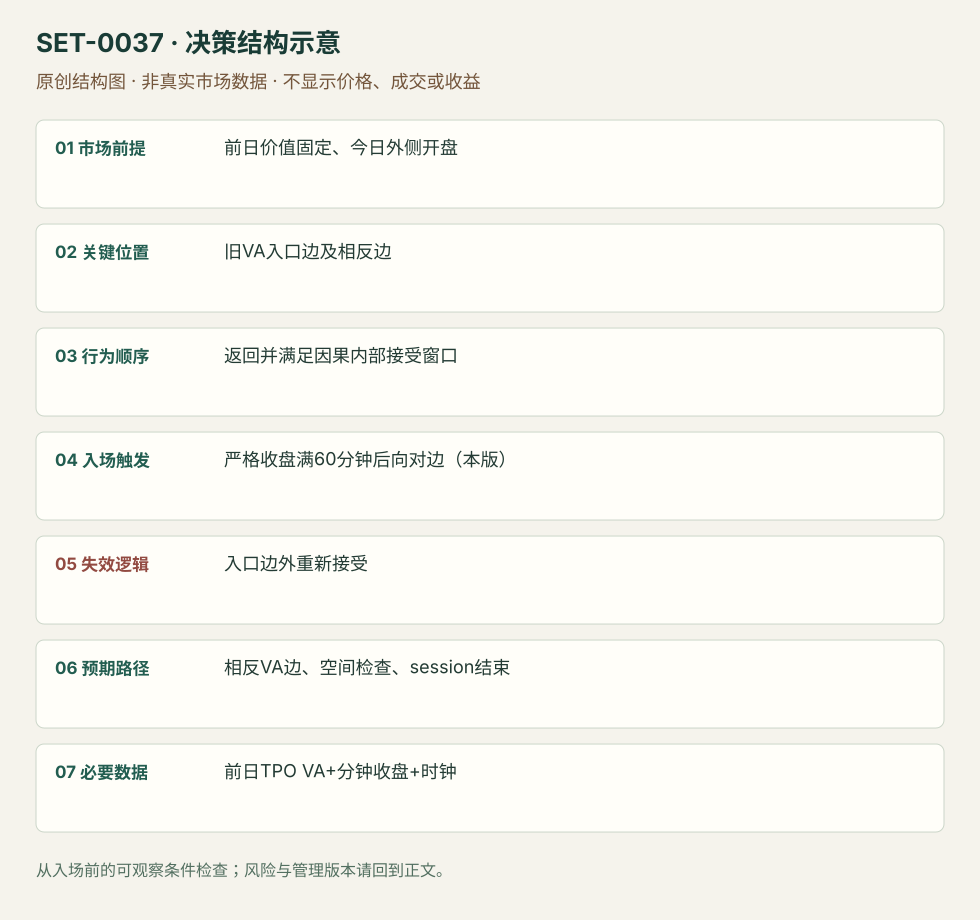

旧价值区重新接受后的横穿
Prior Value-area Reacceptance Traverse / 80% Rule · SET-0037 · reviewed · v1.0.0
盈利证据：not_established。审查范围与来源版本见第13节；未知字段保留缺失原因。
1. 名称与快速概览
在前日价值区之外开盘，回到其中并在内部获得持续接受后，交易到相反价值边界。采用哪种“接受”规则必须固定：本条主版为 LuxAlgo 的60分钟收盘条件，非任意两次触碰。
记录口径：PA supporting；必要数据 prior_session_TPO、OHLC、session_clock。名称性质：来源术语或研究术语。reviewed 只表示本条规则与证据记录审查通过，盈利状态为 not_established。
2. 本质与行为假说
旧价值区曾是双向接受中心，重新接受可能使价格遍历范围；不是物理定律。80%是历史名称，不能当胜率或盈利证明；中途回失入口侧和最后曾触另一侧是不同结果。
3. 适用市场与环境
明确前日TPO价值区、当日在外开盘、随后真正返回。若新消息使新价值建立，或来源采用volume VA而你用TPO，需另立版本。
来源实用市场：指数期货（规则与ES研究）。
Session：前日/当日TPO必须用相同交易段；期货现金与电子日分版本，不能混接。入口、60分钟等待和出场均在同一选定session中，结束前平。
跨市场：本版不主张已经验证的跨市场迁移；更换市场必须重定数据来源、流动性与session。
版本限定：LuxAlgo默认Volume权重、25行、70%价值区，也提供TPO(Time)选项；本条研究版选择TPO，须在复盘中明确，不能将默认Volume预览或AMT不同实现的统计直接套用。
4. 出现前的观察清单
冻结前日VAH/VAL、TPO周期与VA百分比算法，记录今日开盘内/外。按分钟收盘逐步检查接受，不提前使用未来60分钟数据。
5. 形成过程与状态转换
外侧开盘 → 穿回入口边 → 满足预定内部接受窗口 → 入口侧不再被接受在外 → 向相反边移动或重新退出旧价值。
6. Entry trigger 与执行方式
主版只在连续内部收盘满60分钟后，向相反边方向进入；原规则不同实现可能只需两个30分钟TPO各曾交易在内部，两者不能混算。等待后若已经接近目标，跳过而非追入。
7. Invalidation 与止损逻辑
返回入口边外并被接受时失效；硬止损可放入口侧已知枢轴外，但精确缓冲是编辑执行规则。等待60分钟过程内就触对边的样本不当未来入场盈利。
8. Exit、target 与 trade management
相反旧VA边界为目标，途中Profile阻力可管理；窗口越长剩余空间可能越少。未完成横穿也在本session结束前退出。
9. 常见 variations
上/下对称；TPO触及版、收盘保持版与Volume VA版分版本，仅计一个机制。不同价值百分比不是不同Setup。
10. 失败方式与不交易条件
等待接受时已先到目标；旧价值外重新建新平衡；把touch定义换成clean；把最宽规则的命中率套最严入口；忽略费用和失败路线。
11. 与相近 setups 的区别
12. 图表与案例解读
视觉缺口：规则页可打开预览，未核对其是否真实历史行情；反证页是研究摘要。没有把指标预览或概率表当作已看真实交易图。
本地原创示意（VIS-000094，非真实市场数据）：

小屏阅读可打开原尺寸示意图并缩放。

此图用于对照识别顺序与风险定义；不计入真实案例覆盖率。
视觉材料元数据与查看范围
- VIS-000094 · synthetic_structure_diagram / illustration_only / generated_not_market_evidence
品种：未知/不适用；日期：未知/不适用；周期：未知/不适用；时区：未知/不适用
无真实品种、日期或价格：这是结构示意
13. 证据、分歧与未知项
LuxAlgo为规则实现；AMT Balance作者数据给反证，但本研究未复现。其长期ES样本1090次触发中，约62%曾触相反边、约33%为干净横穿，两口径均不能当本条成本后胜率。收益证据未建立。
- [EVD-000074] LuxAlgo，《80% Rule》，SRC-0076；定位：80% Rule description: open outside /60-minute close acceptance / exit。支持：开在旧价值外，回价值内持续60分钟收盘确认，交易至相反价值边；不因名称自动有80%概率。
- [EVD-000075] AMT Balance，《The 80% Rule: Tested & Debunked》，SRC-0075；定位：The 80% Rule Tested & Debunked: trigger and clean traverse distinction。支持：作者ES历史观察区分曾触及相反边和不中断完整横穿，报告不足80%；原始复现、成本与各版本可比性未核验。
审查边界：来源份数与独立核心核验分开；当前类别为 independent_counter_evidence_only。正文中的概念、官方事实、衍生解说或同族资料只按其支持范围使用。
反证样本上下文：AMT网页标2008–2026、4662个ES session、5分钟数据及1090触发；精确起止日、数据商、价值区实现和费用未完整披露，原始数据未取得。统计用于质疑80%口号，不是对本条TPO/严格收盘版的可比回测。
14. 可用于复盘的检查表
- ☐ 下单前的前提可核对：前日价值固定、今日外侧开盘
- ☐ 事前标记位置：旧VA入口边及相反边
- ☐ 行为按顺序出现：返回并满足因果内部接受窗口
- ☐ 实际触发符合选定版本：严格收盘满60分钟后向对边（本版）
- ☐ 事先写明本次否定条件：入口边外重新接受
- ☐ 目标/路径只用当时已知信息：相反VA边、空间检查、session结束
- ☐ 数据满足 前日TPO VA+分钟收盘+时钟；记录时间、点差、滑点、队列和未成交
- ☐ 记录截止平仓及规则偏离；正常亏损不事后改成“未成立”
15. 后续验证问题
touch与clean的定义如何严格复现？严接受条件后仍剩空间多少？同样规则在TPO和Volume VA的差别？
双向相关导航
- SET-0018 平衡区间边缘的第二次反向信号 价值区轮转需前一profile及开盘外→回内的接受时间，本条无需Profile或外部开盘。
- SET-0020 前日低量尾部的次日回价值区 0020 次日近低量尾部极值可直接开盘入，目标入口价值边；本条等重新进入价值并接受后到另一边。
- SET-0004 显著成交重心跌破后的回测延续 0004 旧VPOC被方向性突破并形成外部新价值；本条在旧价值内得到接受。